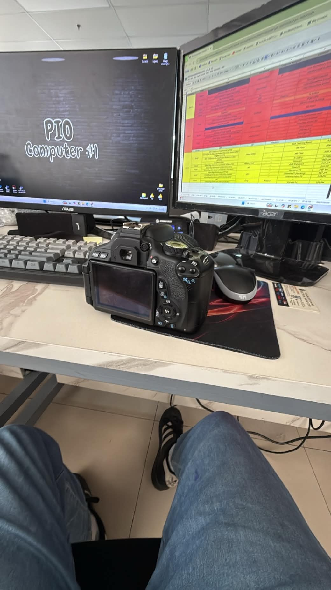

Challenge
I'm still at the stage of exploring how to use different settings on my camera and how to edit pictures on Adobe lightroom
PERSONAL PORTFOLIO & PROJECT ARCHIVE
I volunteered to be a part of Binangonan Municipal Hall's PIO Team
I'm still at the stage of exploring how to use different settings on my camera and how to edit pictures on Adobe lightroom
Luckily enough, the PIO team was patient when it comes to teaching me how to take pictures and how to edit the pictures

What I used: Different types of DSLR cameras from the PIO team and Adobe Lightroom from their Laptop and PCS.